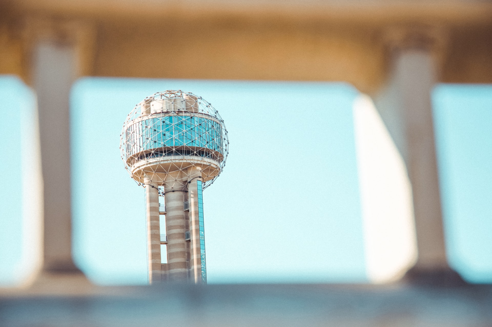

Best places to go to in Dallas

Visit the Reunion Tower
"Seattle has the Space Needle, New York has the Empire State building, and Dallas has the Reunion Tower."The reunion is a 561 ft observation tower in Dallas and 1 of its most recognizable landmarks.
--timeout.com

Learn horse riding at the Texas Horse Park
This 302-acre park sits within the Great Trinity Forest and provides riding lessons, trail rides, and hippotheraphy.

Admrie the Arts district
Dallas has the largest contiguous urban arts district in America with a 118-acre expanse crammed with museums, restaurants, and theaters.